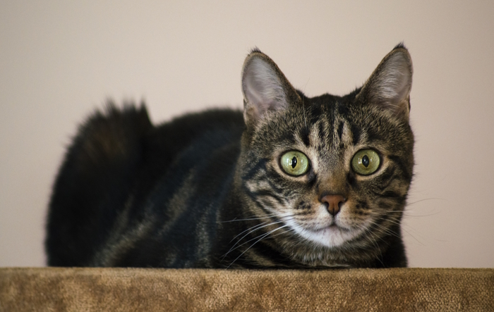
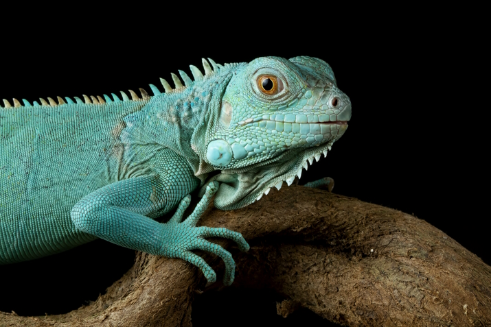
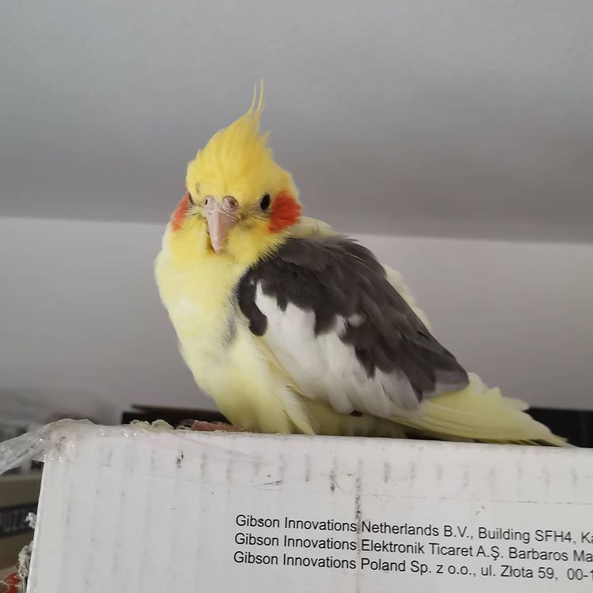
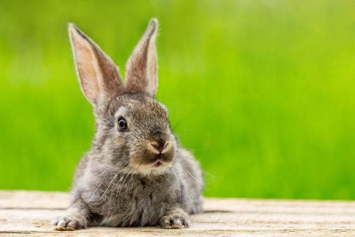

Doge
Doge este un câine shiba inu.
Este jucăuș și își dorește un stăpân iubitor.

Jimmy
Jimmy este o pisică tigrată.
Este cuminte și îi place să se joace cu șoricei de jucărie.

Tad
Tad este o iguană albastră.
Este liniștită și îi plac fructele.

Jazz
Jazz este un papagal nimfă.
Știe să facă cucu-bau și îi place să vorbeascsă.

Lori
Lori este un iepure gri.
Îi place salata și este foarte jucăușă.
